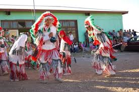
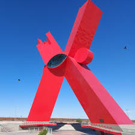

CULTURA
Ciudad Juárez es hogar de tradiciones que se remontan a siglos atrás, entrelazando la fe, la historia y la alegría de su gente. Una de las más emblemáticas es la adoración a la Virgen de Guadalupe, cuya fiesta el 12 de diciembre es ocasión de júbilo y devoción.
Por otro lado, el patrimonio cultural de Ciudad Juárez se manifiesta en los eventos que marcan el compás de la vida social.
Las festividades del Cinco de Mayo, la Revolución Mexicana y las fiestas patrias del 16 de septiembre son celebraciones que conmemoran la identidad nacional y el orgullo de ser mexicano.
La cultura de Ciudad Juárez también se expresa a través de sus ferias y eventos culturales, como la Feria Juárez y el Festival del Sol, que reúnen a miles de personas en una atmósfera de música, danza y gastronomía.

